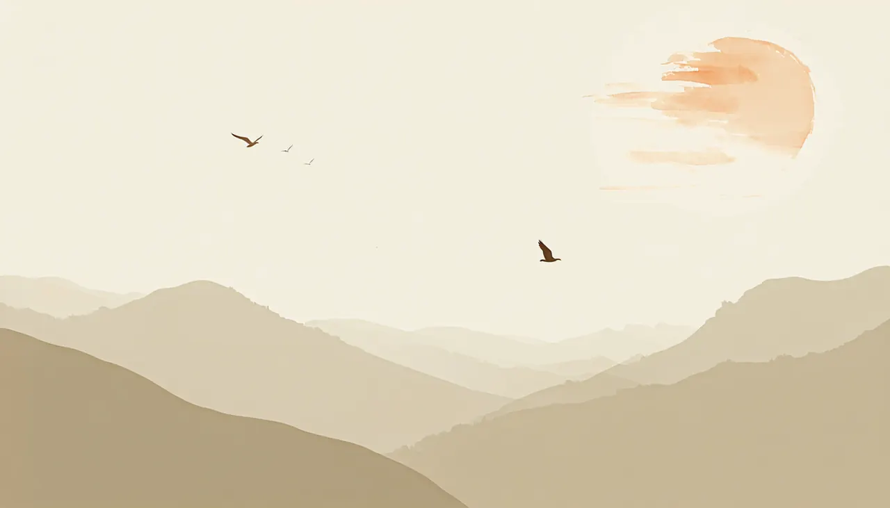

This bird can't keep itself up by flapping — it's a touch too heavy. So it does the next best thing: it surfs the hills. Dive down a slope to gather speed, let go on the rise, and it soars on what it borrowed from gravity.
tap the share button (square with ↑) at the bottom — middle of the toolbar.
scroll, then tap "add to home screen".
tap add (top right). a sketchwings bird lands on your home screen.
tap ⋮ (three dots, top-right).
pick "install app" or "add to home screen".
opens like an app — full-screen, no chrome, even offline.
click the ↓ install icon at the right end of the address bar.
click install in the dialog.
opens in its own window — launchable from your dock or taskbar.